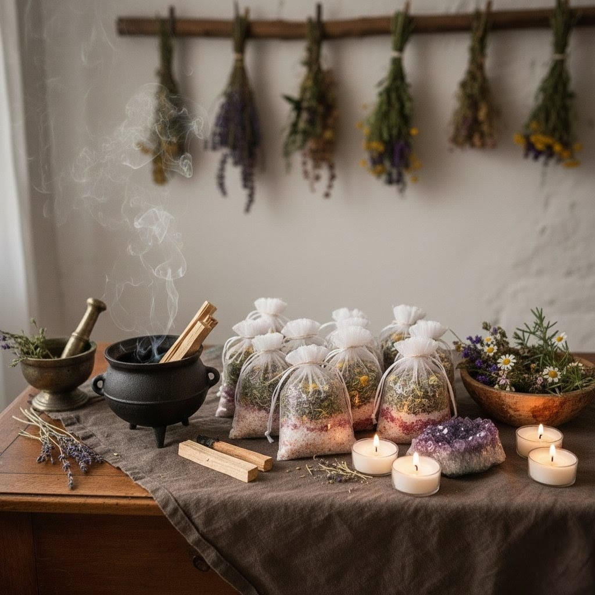

Alquimia da água e das ervas
BanhosEspirituais
Preparos artesanais para limpeza, equilíbrio, fortalecimento e direcionamento energético.
Ver na loja
NythraAteliê

“Que a água leve o que é denso e as ervas tragam o que é luz. No fluir do banho, a alma se despe do passado e se reveste de poder.”— Cântico de consagração Nythra01 / Essência
O ritual da fluidez
Os Banhos Espirituais são preparados para promover limpeza, equilíbrio, fortalecimento e direcionamento energético. Cada composição nasce de uma intenção específica e considera o momento espiritual de quem a recebe.
Produzidos artesanalmente, os banhos respeitam fundamentos da feitiçaria tradicional, o tempo de preparo e o propósito de cada trabalho. Antes do envio, são consagrados e energizados para preservar a intenção à qual se destinam.
Mais do que um preparo ritualístico, o banho pode ser um gesto de cuidado, reconexão e transformação. Ele pode integrar uma prática espiritual ou um momento pessoal de recolhimento, sempre com presença e uso consciente.
Finalidades
e caminhos
Composições direcionadas para diferentes momentos da jornada e preparadas de acordo com a finalidade escolhida.
Proteção
Abertura de caminhos
Amor
Prosperidade
Equilíbrio energético
Magnetismo
Harmonia
03 / Orientações
Uso consciente e cuidado
Utilize o banho conforme as orientações que acompanham o preparo. Antes do uso, confira os ingredientes e evite qualquer componente ao qual você tenha sensibilidade ou alergia. Não ingerir; evite contato com olhos, mucosas e áreas lesionadas. Em caso de irritação, suspenda o uso. Mantenha fora do alcance de crianças e animais.
Loja oficial
Encontre o banhopara o seu momento
Conheça os preparos disponíveis e escolha aquele que melhor dialoga com a intenção que você deseja cultivar.
Explorar banhos na loja